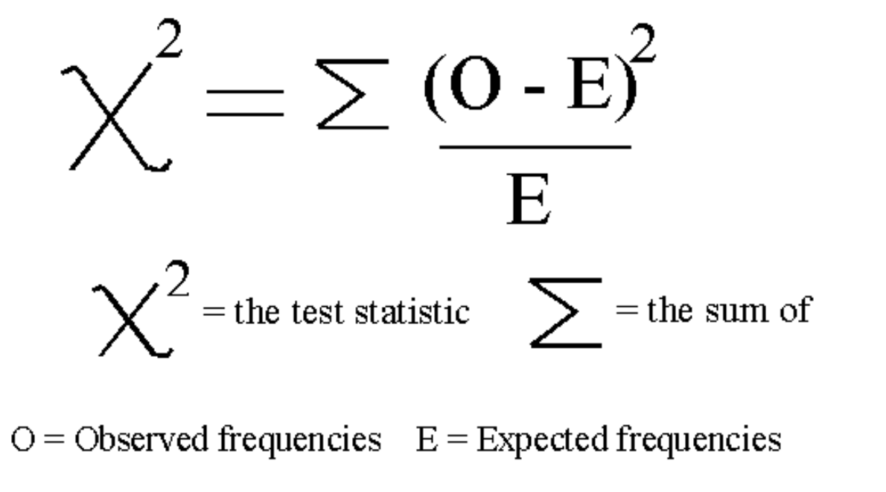
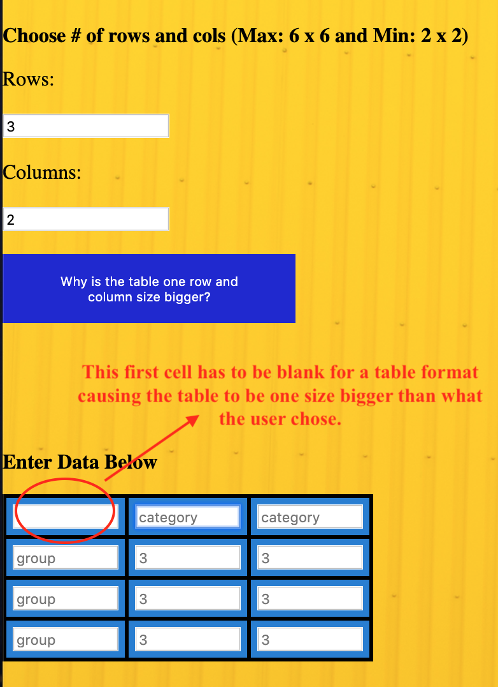
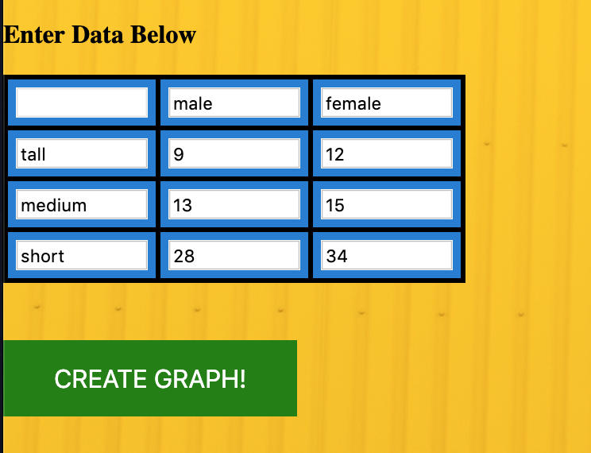
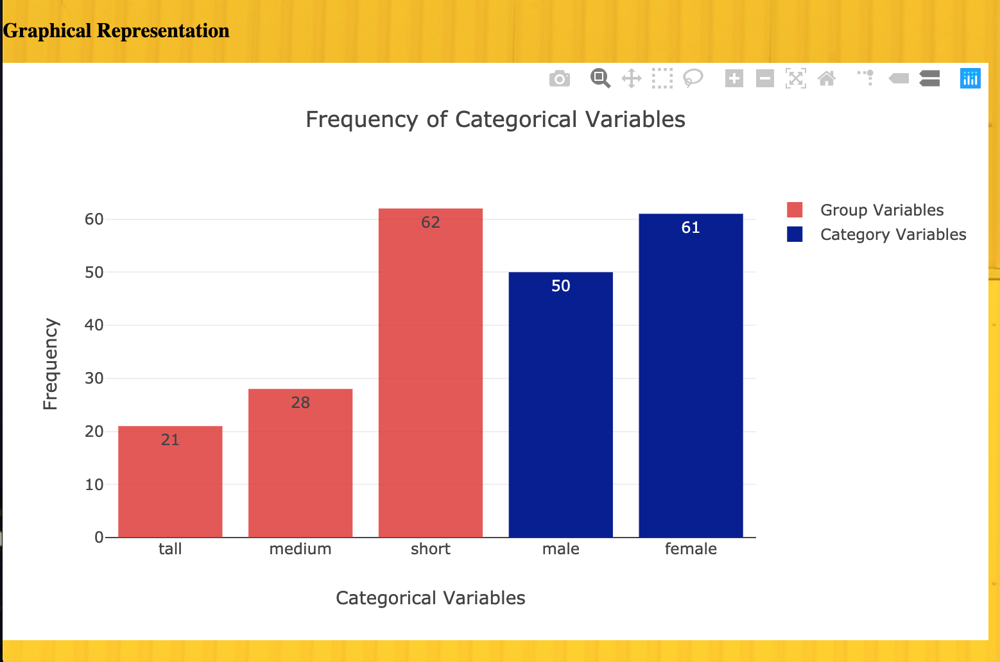
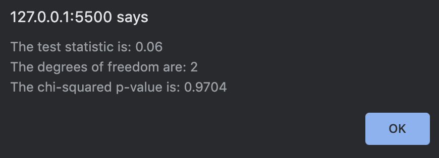

This page allows the user to study and observe the distribution and association between a max of 6 variables for
each type of data set. The frequency (sum of each variable) is shown as a graphical representation.
This distribution can also be analyzed from a variety of tables including frequency, relative frequency, and
contingency tables. The relative frequency is essentially the frequency of each variable dividied by the table
total (total of all observed values). The frequency percent essentially converts the relative frequency into a
percent by multiplying it by 100. The web page also conducts a chi-square test on the variables and produces
a p-value based on a computed test statistic and the degrees of freedom. The chi-square test is computed in the
following manner. First you take the observed and expected values and you subtract each observed observed value
from its respective expected value and square the result. You then divide by the expected value for each
respective observed value. Finally, you take the sum of all these "individual" test statistics to get the
overall test statistic. The test statistic formula is shown in the following screenshot:

The p-value is found by calling the jStat.chisquare.cdf() function, where the test
statistic and degrees of freedom are passed in. Degrees of freedom are calculated by the formula: (#rows - 1) *
(#columns - 1). To get the p-value however, you have to do 1 - the value returned by the jStat function because
it is showing the value to the right of the test statistic, and you want the area to the left.
When the website is loaded, the first thing that the user needs to do is enter the number of rows and columns. The number of rows and colums are capped at 6 and a min of 2. The default values in the rows and columns are 2 for both. The input is binded so that the table is automatically rendered when the rows/columns value is changed. This way the user does not have to click a button to create the input table.
The user should enter a number of rows and columns appropriate to the number of categorical data they want to compare/find the association between.
When the user enters this, a table will automatically be created, with the number of rows and columns chosen, but
a size bigger. For example, if a user chooses 3 rows and 2 columns, the resulting table will be 4 by 3, because
the way a table is formatted, the first cell of the table has to be blank so that the group variables can be
aligned properly. This is depicted in the following screenshot:

There is help button that explains this on the webpage itself that explains this.
The user will next, input their data in the table they created, and make sure they place the categorical and group variables in the appropriate place. Placholders are situated for "Group" and "Category" so the user knows where the categorical data variables go. These inputs should typically be text and not numbers. Then they can enter the data for those variables. These cells are marked by the placeholder "3". These inputs can be either whole numbers or decimal numbers; they cannot be negative numbers or strings/text. The data is validated so that they cannot enter negative observed values or strings.
The user then will press the "Create Graph!" button to create a graph that displays the frequencies of their
observed data values for each category/group variable. The type of graph that is created is a bar graph, and the
bars are grouped in a similar color for the variable names. As seen in the following screenshot, the category
variables "male" and "female" are grouped together as dark blue in color, and the "tall", "short", "medium"
group variables are grouped together by color in a rose pink color. The graph is "hoverable" and shows the
frequency count of each individual bar on the bar itself and if you hover over it.


While the user is inputting their data in the table, they will notice that the frequency, relative frequency, contingency, and expected values tables will automatically pop up. These tables are coded to update on cell change. This means that the tables are updated in real time.
The output for the frequency and relative frequency table section shows 2 tables. The first table shows the frequency and relative frequency for the group variables. The second table shows the frequency and relative frequency for the categorical variables.
The output for the contingency table is identical to the input table, except that it displays the group and category variables totals alongside.
The output for the expected value table shows the expected values for the observed data the user inputted. These values are what the "predicted" values would be if the user had conducted the experiment or collected the sample of countless repetitions. The expected values are useful for calculating the test-statistic. It is important to know that the expected table value is transposed from the input table. The placement of the rows and columns is transposed, so keep that in mind when reading the information from the expected values table.
The final thing on the page the user will see is the "Get Chi-Square Stats" button. This button will create a alert on the users' screen when clicked and present them with the computed chi-square p-value for the input data. It will also display the test statistic and the degrees of freedom for their data as shown in the following screenshot:
Note: The Input Table values have to be entered and filled out before you hit the "Create Graph!" or "Get Chi-Square Stats" buttons. If those inputs are not filled out, the buttons will print out a garbage graph and test statistics
If you have any questions that are not addressed on this page, please contact the webpage developer: Sangram Kadam